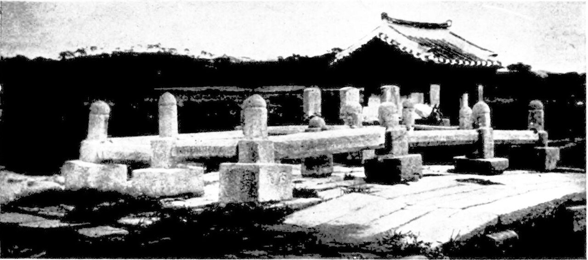
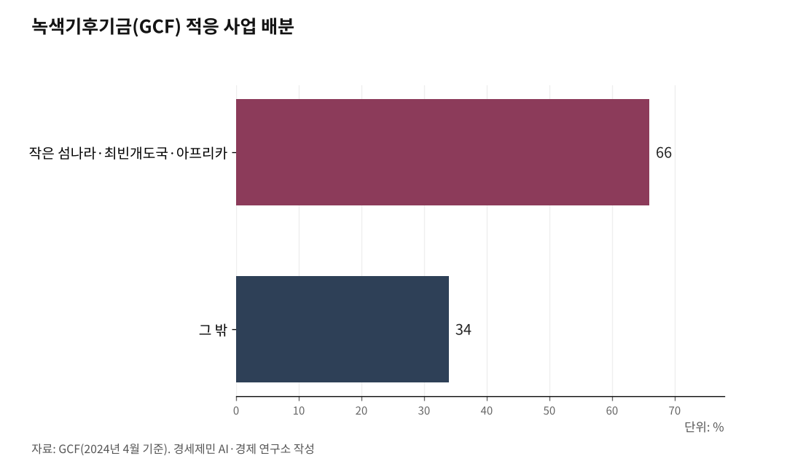

박찬대가 건 송도 UN AI 허브, GCF 12년이 받친다
박찬대 당선인, 민선 9기 핵심 과제로 '송도 글로벌 AI 허브' 제시
독일 본 제치고 유치한 GCF 12년, 253건 530억 달러 운영 실적
12년 만에 첫 한국인 국장, 고위직 배출은 과제로 남아
박찬대 인천시장 당선인이 민선 9기 핵심 과제로 '송도 글로벌 AI 허브'를 내걸었다. 정부가 유엔(UN) 6개 기구와 글로벌 AI 허브 협력의향서(LOI·협력 의사를 담은 문서)를 맺은 뒤, 어느 도시에 세울지가 과제로 남았다. 박 당선인은 송도를 답으로 제시했다.

인천에는 그 근거가 있다. 국제기구를 유치한 뒤 12년째 직접 운영해온 사례다.
녹색기후기금(GCF·Green Climate Fund, 개도국 기후변화 대응을 돕는 국제기금)이다. 2013년 12월 송도 G타워에 사무국을 열었다.
GCF 12년이 박 당선인 구상을 받치는 근거를 사실로 짚는다.
1. 독일 본을 제치고 유치한 12년
2012년 GCF 사무국 유치에 6개국이 뛰어들었다. 한국·독일·스위스·멕시코·폴란드·나미비아다. 임시 사무국이 있던 독일 본이 유력했다.
국내에서도 서울과 인천이 경쟁했다. 한국개발연구원(KDI) 국제대학원 도시 경쟁력 분석에서 송도가 저탄소 녹색 경쟁력과 외국인 정주 환경에서 높은 평가를 받아 국내 후보로 확정됐다.
국제 평가위원회는 한국·독일·스위스 세 나라에 법적 지위·특권면제·행정재정지원·입지여건 모든 항목에서 최상위 등급을 줬다. 2012년 10월 송도 제2차 이사회에서 다섯 차례 비밀투표 끝에 인천이 확정됐다.
결정 논리는 두 가지였다. 환경 관련 국제기구가 아시아에 하나도 없다는 지역 안배, 선발 개도국으로서 선진국과 개도국을 잇는 가교 역할이다. 그해 12월 카타르 도하 당사국총회에서 최종 인준됐다.
정부는 2013년 특별법을 만들고 본부협정을 국회에서 비준했다. 기획재정부·인천시·GCF 세 곳이 행정·재정 협정을 맺었고, 12월 4일 G타워에 사무국이 문을 열었다.
특별법, 본부협정 비준, 행재정 협정. 국제기구를 받는 3단계 법적 기반을 인천이 직접 거쳤다. 국내 다른 도시에는 없는 경험이다.

2. 253건 530억 달러, 숫자가 말하는 실적
GCF는 유엔기후변화협약 재정 기구로 '환경 분야 세계은행'으로 불린다. 선진국이 기금을 내고 개도국 온실가스 감축과 기후변화 적응을 돕는다.
2024년 4월 기준 누적 253건, 530억 달러(약 72조 원) 사업을 승인했다. 이산화탄소 29억 톤 감축, 수혜 인구 10억 명이다.
감축과 적응 사업 비율은 46 대 54로 적응 비중이 높다. 적응 사업 가운데 66%가 작은 섬나라·최빈개도국·아프리카에 돌아갔다. 한국은 초기 재원조성부터 2차 재원보충까지 누적 6억 달러(약 8200억 원)를 냈다.
이사회는 선진국 12석, 개도국 12석 동수로 연 3회 열린다. 대부분 송도컨벤시아에서 열렸다.
면세·외교특권·비자 처리, 상주 인력 지원 같은 실무 체계가 12년간 돌아갔다. UN AI 허브가 송도에 들어오면 이 체계를 곧바로 쓸 수 있다.
3. 12년 만에 첫 한국인 국장, 고위직은 과제
2024년 10월 김현정 인사·조직문화국장이 부임했다. GCF 출범 12년 만의 첫 한국인 국장급이다. 민간 기업에서 20년간 전략·기획·인사 분야에서 일한 인물이다.
사무총장·부총장급 한국인은 아직 없다. 역대 사무총장 4명은 튀니지·호주·프랑스·포르투갈 출신이다. 현 사무총장은 포르투갈 출신 마팔다 두아르테다.
박태웅 녹서포럼 의장은 2026년 3월 22일 경향신문 칼럼에서 이렇게 썼다. "어떤 나라가 각 기구의 핵심 포지션에 자국민을 배치하느냐가 의제를 결정한다. 우리는 국력에 비해 국제기구 고위직을 경험한 인력이 적다."
본부가 송도에 있어도 의제를 짜는 자리에 한국인이 없으면 장소만 내준 개최지에 그친다. UN AI 허브가 다룰 노동·이주·통신·보건·식량·개발 6개 기구(ILO·IOM·ITU·WHO·WFP·UNDP)에서도 같은 일이 되풀이될 수 있다. GCF 12년이 남긴 교훈이다.
4. 당선인이 핵심 과제로 내건 송도 AI 허브
박찬대 당선인은 6·3 지방선거에서 52.84%를 얻어 당선됐다. 그는 5월 29일 송도에서 사전투표를 마친 뒤 '송도 글로벌 AI 허브 유치'를 공약으로 내놨다.
박 당선인은 "국제기구와 AI 산업, 국제 협력과 미래 기술이 만나는 세계적인 공공 AI 협력 플랫폼 '송도 글로벌 AI 허브'를 반드시 성공시키겠다"고 밝혔다.
당선 뒤에도 기조를 이어갔다. 6월 21일 민선 9기 비전 'ABC+E'를 내놓으며 UN 글로벌 AI 허브 송도 유치를 핵심 과제로 꼽았다. A는 물류와 AI를 결합한 첨단산업, B는 바이오, C는 문화콘텐츠, E는 해상풍력 에너지다.
박 당선인은 글로벌 AI 허브를 GCF를 비롯한 국제기구가 모인 송도에 조성하겠다고 했다. 그는 "송도에 이미 국제기구들이 집적돼 있고 글로벌 협력 기반도 갖춰져 있어 충분히 경쟁력이 있다"고 말했다.
그가 가리킨 국제기구의 대표가 GCF다. 12년 운영 역량이 당선인 말을 떠받친다.
5. C타워 2600억 원, AI 허브도 함께 쓴다
인천시는 2022년 10월 G타워 옆 1만8500㎡ 용지에 국비 2600억 원을 들여 GCF 복합단지(C타워)를 짓겠다고 발표했다. 2027년 말에서 2028년 초 완공 예정이다.
GCF가 다루는 기후변화와 UN AI 허브가 다루는 AI 공공 활용은 겹친다. 세계식량계획(WFP) 식량 물류, 세계보건기구(WHO) 보건, 유엔개발계획(UNDP) 개도국 개발이 모두 기후 대응과 이어진다.
C타워 기반시설을 AI 허브와 함께 쓰면 초기 투자비를 줄일 수 있다. AI 허브가 들어설 공간이 송도에 이미 준비되고 있는 셈이다.
남은 물음도 있다. GCF가 인천 시민 삶에 와닿는지에 대한 공식 조사 자료는 찾기 어렵다. 인하대·인천시·GCF가 인턴십을 운영하고 대학 강연회를 연 실적은 있지만, 인천 제조업·바이오·물류 산업과 GCF 사업을 이은 구체적 사례는 확인되지 않는다.
인천 안에 있되 인천과 동떨어진 국제기구. GCF 12년이 증명한 것은 운영 역량이고, 증명하지 못한 것은 시민 체감이다. 박 당선인이 내건 '송도 글로벌 AI 허브'가 두 번째 국제기구에서 같은 거리를 두지 않으려면, 운영 역량 위에 시민 체감을 더하는 설계가 남은 과제다.
참고문헌
· 외교부, 「녹색기후기금(GCF) 사무국 유치 성공」, 2012.10., https://www.mofa.go.kr
· 인천광역시 환경정책과, 「GCF 유치 경과」, https://www.incheon.go.kr/env/ENV010102
· 대한민국 정책브리핑, 「인천시, 유엔 녹색기후기금 유치 후보로」, 2012.3.13., https://www.korea.kr
· 인천광역시 보도자료, 「송도 둥지 10년, GCF…글로벌 도시 인천과 소통」, 2024.5.2., https://www.incheon.go.kr
· 기획재정부, 「녹색기후기금(GCF) 첫 한국인 국장(Director) 부임」, 2024.10., https://eiec.kdi.re.kr
· GCF, 「Annual Progress Report 2024」, https://www.greenclimate.fund
· KIEP, 「녹색기후기금(GCF) 2기(2024~27년) 운영방향과 시사점」, 기초자료 24-01, 2024.2.
· 박태웅, 「[박태웅의 디지털] 유엔 AI 허브를 어떻게 맞이할 것인가」, 경향신문, 2026.3.22., https://www.khan.co.kr/article/202603221958005
· 인천광역시, 「GCF 콤플렉스 조성 기본계획 및 타당성조사 용역 착수 보고회」, 2022.10.24.
· 「박찬대 인천시장 후보 "송도에 UN 글로벌 AI 허브 반드시 유치"」, 더팩트, 2026.5.29., https://news.tf.co.kr
· 「박찬대 "송도에 글로벌 AI허브 유치"…사전투표 후 '송도 공약'」, 뉴스1, 2026.5.29., https://www.news1.kr
· 「"AI·바이오·문화·에너지… 인천 미래는 ABC+E로 그린다"」, 파이낸셜뉴스, 2026.6.21., https://www.fnnews.com
· 「[6·3 지선] 민주 박찬대, 인천시장 당선…유정복 연임 실패」, 파이낸셜뉴스, 2026.6.4., https://www.fnnews.com
※ 이 칼럼은 AI 프로그램 클로드를 활용해 작성했습니다.
사진 출처
· [대표사진] Homer Hulbert, "The "Blood Bridge" at Songdo.jpg", 위키미디어 공용, 퍼블릭 도메인, https://commons.wikimedia.org/wiki/File:The_%22Blood_Bridge%22_at_Songdo.jpg
※ 이 기사는 인공지능을 활용해 작성했습니다.
관련기사
- 국제기구 도시 송도, UN AI 허브 최적지… 박찬대 앞장서
- UN AI 허브, 인천 제조업 25만에 '국제 노동기준' 연다
- 짓는 도시 아닌 운영하는 도시… 인천의 UN AI 허브 승부수
- UN AI 허브는 거대 데이터센터 아닌 'AI규범 UN기구'… 국제기구 클러스터 인천이 최적지
저작권자 © AI경세제민 무단전재 및 재배포, AI학습 및 활용 금지